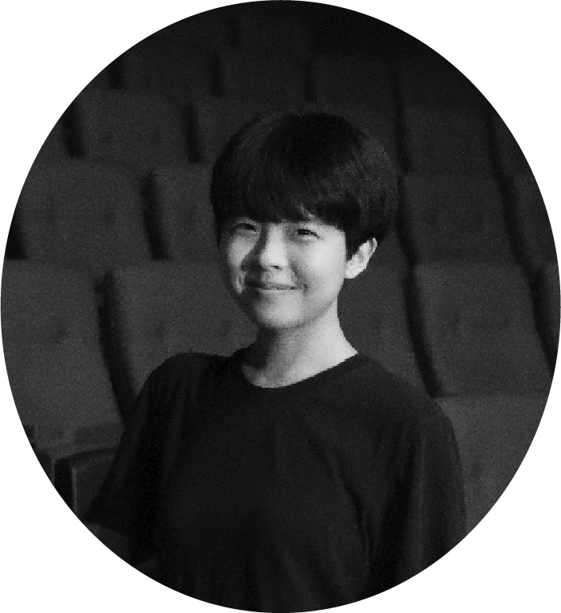
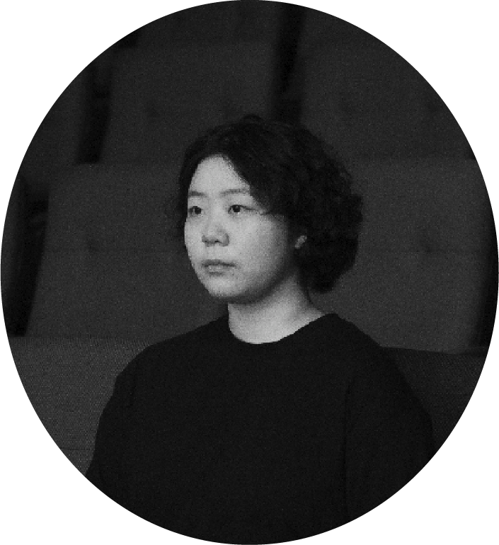
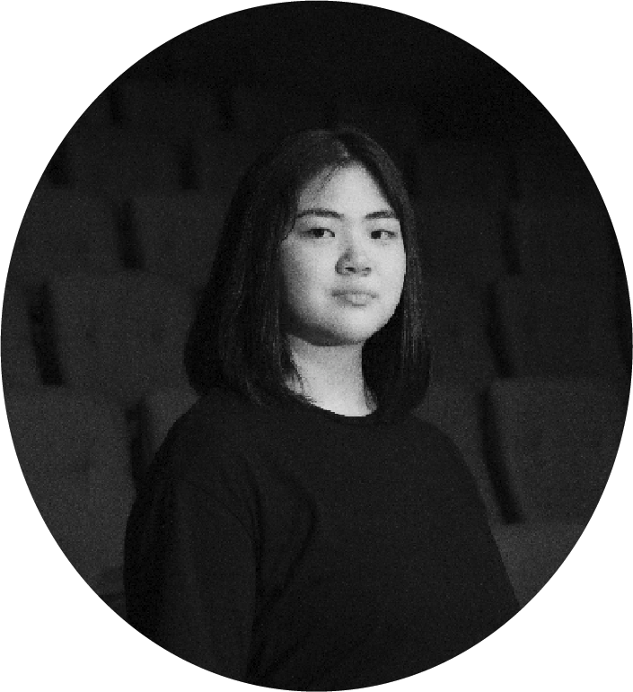

CAST

“선로 위에 서 있다고 느끼는 모두가 혼자지. 그렇다고 멈출 수가 없어. 멈출 줄을 몰라.
발을 구르는 것 말고 다른 건 잊은 사람처럼 달리면서, 울상 짓고 있었어.”
나 (我) 주인공 | 윤호산
자신과 캐릭터의 가장 닮은 점은?
뚱하게 대화하다가도 관심 있는 주제에 눈을 번뜩이는 것. ‘나’는 누군가 잠이라는 주제에 대해 떠든다면 (그게 어떤 내용이든) 일단 눈이 반짝이는데, 그 모습이 꼭 날 보는 것 같다.
연기하면서 제일 신경 썼던(어려웠던) 부분이 있는지?
캐릭터를 ‘사이’에 두고자 노력했다. 너무 피곤하기만 하거나, 모든 진리를 통달해버리는 단편적인 인물이 아니었으면 했다. 최대한 솔직하고 현실적이게, 그리고 연극적이지 않게(?) 표현하고 싶었다.
가장 기억에 남는 (좋아하는) 대사는?
“선로 위에 서 있다고 느끼는 모두가 혼자지. 그렇다고 멈출 수가 없어. 멈출 줄을 몰라.
발을 구르는 것 말고 다른 건 잊은 사람처럼 달리면서, 울상 짓고 있었어.”
나는 늘 가만히 쉬지 못하고 항상 사부작거리는 사람인데, 부지런하다기보단 그냥 불안한 사람이다.
뭔가 열심히 해보려고 해도 불안하고, 안 하면 더 불안한 이 시점에 위로가 되는 대사였다.
캐릭터에게 해주고 싶은 말?
사실 너는 이상한 존재가 아니야. 그래서 더 많은 걸 볼 수 있는 거잖아? 뭐가 됐든, 편안했으면 좋겠다.
캐릭터를 만들기 위해 공부한(연구한)게 있다면?
‘나’를 만들기 위해 진짜 나에 대해 생각했다. 나의 경험을 참고해서 ‘나’의 배경을 만들어나갔다.

“수면이 곧 자연의 이치이며, 잠이 우리를 자유케 하리니.”
놈 (者) 배우 ㅣ 강혜진
자신과 캐릭터의 가장 닮은 점은?
‘놈’이 연기하는 네 명의 캐릭터들 모두가 내 안에 조금씩 존재하는데, 그 중에서도 특히 ‘행인’과 ‘수리공’이 나와 많이 닮아 있다고 느꼈다. 행인에게서는 하고 싶은 말은 너무 많지만 어딘가 어쭙잖은 내 모습이 보이고, 수리공에게서는 가만히 있는 시간을 못 견디고 계속해서 할 일을 찾아내려는 습관이 생각났다. 이 연극을 보시는 분들에게도 어쩌면 ‘놈’과 자신이 비슷하다고 느껴지는 부분이 종종 있을 것 같다.
연기하면서 제일 신경 썼던(어려웠던) 부분이 있는지?
네 명의 서로 다른 인물이 모두 개성이 강한 인물이다 보니 각자의 캐릭터를 만들어내는 것이 가장 어려웠던 부분이자 가장 많이 신경 쓴 부분이다. 한 무대에서 여러 배역을 연기하는 것이 어려우면서도 재미있게 느껴졌다.
가장 기억에 남는 (좋아하는) 대사는?
“수면이 곧 자연의 이치이며, 잠이 우리를 자유케 하리니.”
잠을 자지 않는 무대 위 세계관 안에서는 광신도들이나 외치고 다니는 말이지만… 더 오래, 더 많이 자고 싶은 인간인 나로서는 썩 마음에 드는 말이다.
캐릭터에게 해주고 싶은 말?
우리 이제 잠 좀 자자!
캐릭터를 만들기 위해 공부한(연구한)게 있다면?
테이블 작업 때부터 각각의 캐릭터마다 현실에서 비슷한 인물상을 하나씩 설정하고 그 이미지에 대입해서 생각해 보고자 했다. ‘행인’은 대학교 신입생, ‘수리공’은 타성에 젖은 직장인, ‘지도교사’는 친절하고 말 많은 교수님 같은 이미지다. ‘큐레이터’는 매체에서 흔히 보이는 광신도 그 자체. 이렇게 특징적인 인물들의 성격을 대입해 캐릭터를 만들어냈다.

“진부한 질문이군. 하지만 핵심을 꿰뚫는 걸?”